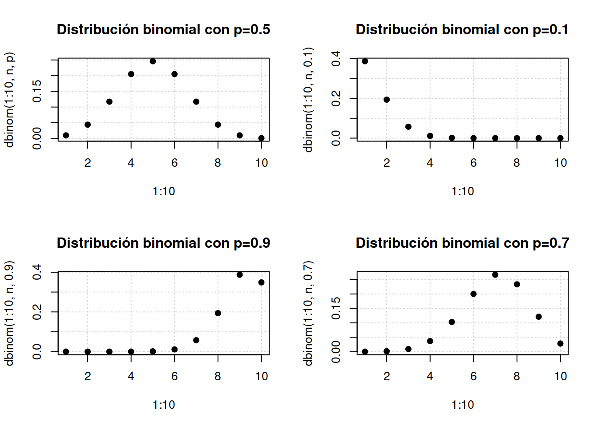
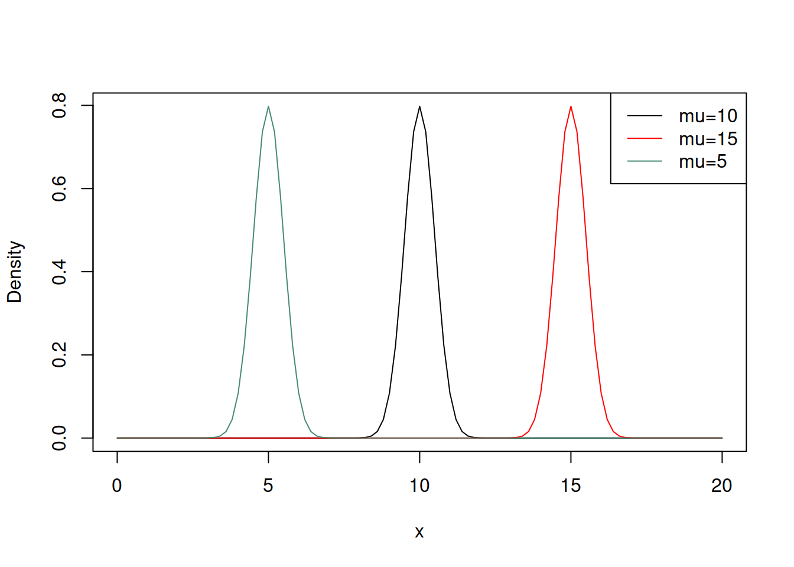

La distribución binomial es un modelo de probabilidad discreta que cuantifica las posibilidades de obtener uno de dos resultados en un conjunto de pruebas repetidas. Cada resultado tiene una probabilidad que no supera 1 y no es negativa.
Estas pruebas se caracterizan por tener solo dos resultados posibles, como esaber si un objeto es defectuoso, si nuestro interés radica en observar saber si es defectuoso o no, etc. De aquí la noción de éxito o fracaso.
Cada experimento es independiente y no afecta las probabilidades futuras; en cada intento, la probabilidad de obtener uno de los dos resultados es constante. Por ejemplo, si arrojamos un dado equilibrado, la probabilidad de obtener un número par (2, 4 u 6) o impar (1, 3 u 5) es del 50%, y esta probabilidad se mantiene constante en cada lanzamiento.
En la distribución binomial, se emplean tres parámetros:
Para utilizar este modelo, primero debemos definir \(p\). Por ejemplo, en el caso del dado, podríamos definir “éxito” como obtener un número par y, en consecuencia, \(q\) sería obtener un número impar.
Otro ejemplo: Supongamos que deseamos calcular la probabilidad de encontrar un taxi libre al apresurarnos por la calle en un día lluvioso, donde es probable que estén ocupados.
Asignamos una probabilidad del \(15\%\) (\(0.15\)) a que el taxi esté libre, lo que significa que \(p\) es \(0.15\) y, por lo tanto, \(q\) (la probabilidad de estar ocupado) es \(1 - 0.15\), es decir, \(0.85\) o \(85\%\) en términos porcentuales.
De esta manera, podemos utilizar estos porcentajes para determinar la probabilidad de que un resultado específico ocurra un número determinado de veces en nuestras pruebas repetidas.
La función de masa
\[P(X=x)= \binom{n}{k}=p^n(q)^{n-x}\]
Sus momentos son
\[E[X]=np, \quad Var[X]=npq\]
# En R podemomos obtener esta distribución de la siguiente manera
n<- 10 #Tamaño de muestra
p<- 0.5 #Probabilidad de éxito
dbinom(1,n,p)# Función de masa[1] 0.009765625pbinom(2,n,p)#Probabilidad acumualada hasta un punto[1] 0.0546875qbinom(0.5,n,p) # Cuantiles[1] 5rbinom(10,n,p) #Números aleatorios [1] 4 7 5 4 6 6 6 6 8 7par(mfrow=c(2,2))
plot(1:10,dbinom(1:10,n,p),pch=19,panel.first=grid(),main="Distribución binomial con p=0.5")
plot(1:10,dbinom(1:10,n,0.1),pch=19,panel.first=grid(),main="Distribución binomial con p=0.1")
plot(1:10,dbinom(1:10,n,0.9),pch=19,panel.first=grid(),main="Distribución binomial con p=0.9")
plot(1:10,dbinom(1:10,n,0.7),pch=19,panel.first=grid(),main="Distribución binomial con p=0.7")
La distribución de Poisson es una distribución de probabilidad discreta que se aplica a las ocurrencias de algún evento durante un período determinado.
Es decir, es una distribución de probabilidad discreta en la que sólo es necesario conocer los eventos y cuál es su frecuencia media de ocurrencia para poder conocer la probabilidad de que ocurran.
Una distribución es discreta cuando se toma un número de valor finito, mientras que las continuas usan un número infinito de valores.
La función de masa
\[P(X=x)=\frac{e^{-\lambda}\lambda^x}{x!}\] Su esperanza y varianza son iguales, esto es
\[E[X]=Var[X]=\lambda\]
La distribución normal también conocida como la distribución gaussiana o campana de Gauss, es una de las distribuciones de probabilidad más importantes y ampliamente utilizadas en estadísticas y matemáticas.
Es una distribución continua que se caracteriza por su forma de campana, simétrica alrededor de su media, y está completamente determinada por dos parámetros: la media \(\mu\) y la desviación estándar \(\sigma\).
La función de densidad de probabilidad (PDF) de una distribución normal se representa mediante la siguiente fórmula:
\[f(x)=\frac{1}{\sigma\sqrt{2\pi}}e^{\frac{-(x-\mu)^2}{2\sigma^2}}\] donde
Algunas propiedades importantes de la distribución normal son las siguientes:
# En r podemos trabajar con la función normal de la siguiente manera
mu<- 10 #Tamaño de muestra
sigma<- 0.5 #Probabilidad de éxito
dnorm(1,mu,sigma)# Función de densidad[1] 3.517499e-71pnorm(2,mu,sigma)#Probabilidad acumualada hasta un punto[1] 6.388754e-58qnorm(0.5,mu,sigma) # Cuantiles[1] 10rnorm(10,mu,sigma) #Números aleatorios [1] 10.304658 10.468928 10.139588 10.302896 10.027847 10.290429 9.485101
[8] 9.418410 9.375392 9.798256# Gráfico función de densidad con diferente media
curve(dnorm(x,mu,sigma),xlim=c(0,20),ylab="Density")
curve(dnorm(x,15,sigma),xlim=c(0,20),add=T,col="red")
curve(dnorm(x,5,sigma),xlim=c(0,20),add=T,col="aquamarine4")
legend("topright",legend=c(paste0(expression(mu),"=","10"),paste0(expression(mu),"=","15"),paste0(expression(mu),"=","5")),col=c("black","red","aquamarine4"),lty=1)